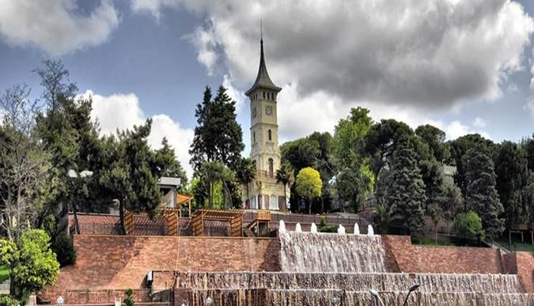
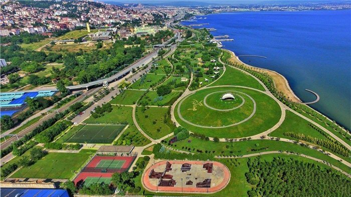
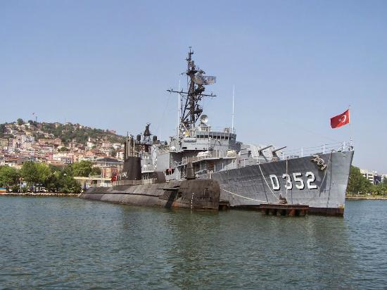
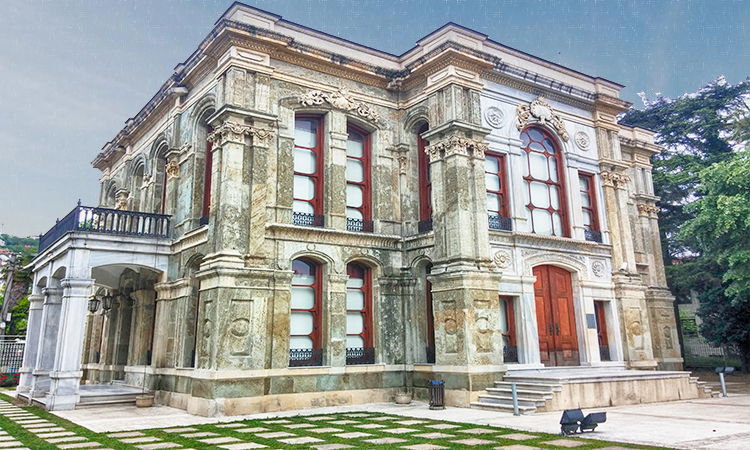
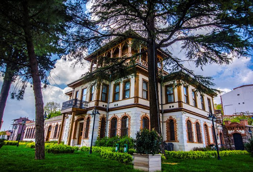

Şehrim
İzmit, Türkiye'nin Kocaeli ilinin bir ilçesidir. İzmit Körfezi'nin doğu kıyısında, Marmara Bölgesi'nin Çatalca-Kocaeli bölümünde yer almaktadır. Günümüzdeki güncel nüfusu 1,906 milyon'dur.İzmitin pişmaniyesi meşhurdur. Tarihi gar,fevziye cami, yenicuma cami, eski vali konağı ve saat kulesi başta olmak üzere birçok tarihi mekanı bulunmaktadır.Günümüzdeki gün geçtikçe kalabalıklaşan şehirlerdendir. İzmşte gelen bir kişi mutlaka saat kulesinin orada muhteşem manzaraya bakarak çayını yudumlamalı. İzmit'in dağları ormanlarla örtülüdür. Bitki örtüsü hem Akdeniz hem de Karadeniz bölgesi özelliği taşır. Ormanla kaplı dağlık bölge olmasına rağmen günümüzün genel sorunu olan betonlaşma işlemleri bu alanlarda da doğamızı yoketmektedir. İzmit deniz ulaşımı açısından da ülkenin en yoğun merkezlerinden birisidir. Feribotla Karamürsel tarafına geçmekte yapılaca aktiviteler arasında olmalıdır. İzmtitin bir başka güzel mekanı da yürüyüş yoludur. Çarşıda olan nadir ağaçlık bölgelerdendir ve kuş cıvıltıları asla eksik olmaz. Yürüyüş yolu izmitin olmazsa olmazıdır. İzmiti izmit yapan bir başka özelliği ise "izmitçe" denilen izmitlilere has kelimeleri kullanarak konuşmaktır. Dışarıdan gelen birisi bu şehre şüphesiz zor uyum sağlayacaktır :).İzmitin güzelliklerinin yanında kötü olan taraflarıda vardır, Sanayi kenti olması gibi. Fabrikalar havayı çok fazla kirlettiği için hava kirliliği Kocaeli'de çok fazladır. Buna rağmen İzmitliler bu duruma alışmış bulunmakta ve nüfusun çoğu fabrikalarda iş imkanı bulabilmektedir. Bu şehri yıpratan, yıkan en önemli olay ise 99 depremidir. Günümüzde de depremin zararlarının en çok görüleceği yerlerden biri olarak bu şehir tahmin ediliyor..
Tarihçe
Kocaeli (İzmit) İlkçağda MÖ 377 MÖ 67 yılları arasında “Bitinya” adı verilen bir bölgede faaliyet gösteren devletin egemenliğindedir. Bitinya bölgesi, İzmit Körfezi, İstanbul, Sakarya ve Bursa arasında kalan bir bölgedir. Bu bölge tarihsel süreçlerde, “Olbia”, “Astakos”, “Nicomedia”, “İznikmid”, “İzmid” ve son olarak da Cumhuriyet Döneminde “Kocaeli” adlarını alarak tarihe yön vermişlerdir.
Bitinya (Bithynia) döneminden yazılı belge kalamasa da ‘Deniz kavimleri’ istilası olarak adlandırılan olaylar sonrasında İÖ VIII yy. sonlarında Helenler Anadolu kıyılarına kalan koloniler oluşturmaya başladı. Bu koloniler arasında Megaralılar, İzmit’in güneyinde Başiskele mevkiinde deniz ve kara ulaşımına uygun olduğundan bir liman kenti olarak “Astakos” şehrini kurdu.
Astakos, yörede kurulduğu bilinen ilk yerleşme olmasının açısından önemlidir. Kent, günümüzde İzmit ilçesinin kurulu olduğu bölgeye yerleşerek, uygarlıklarını burada devam ettirdi. Bitinya Krallığı’nın başkenti olan bu kentte aynı zamanda kurucusunun I. Nikomedes isminden dolayı “Nicomedia” ismini de almıştır.
gezilecek yerler
- 
- 
- 
- 
- 